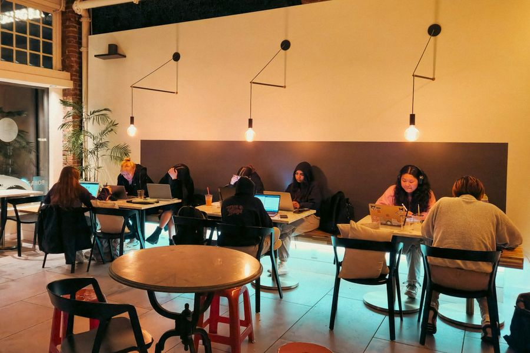
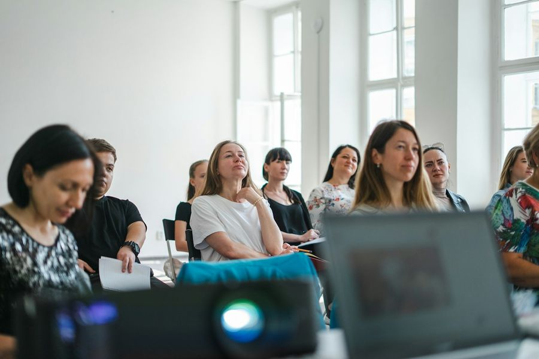

01
ITのことを、気軽に聞ける場所。
Learning Space学校のように、全員が同じ授業を受ける場所ではありません。自分の目的に合わせて、勉強したり、質問したり、作業したり。ITのことを気軽に聞ける「カフェ」のような場所です。
「ちょっと分からない」。それくらいからで、大丈夫です。
学びたいときに、ふらっと。
SKYMが事務所を開放してひらく、
ITのことを聞ける無料の学び場。
学生でも、主婦・主夫でも、会社員でも、異業種でも。
所属も、経験も、年齢も関係ありません。
分からないことがあったら、
気軽に聞きに来てください。

学校のように、全員が同じ授業を受ける場所ではありません。自分の目的に合わせて、勉強したり、質問したり、作業したり。ITのことを気軽に聞ける「カフェ」のような場所です。
「ちょっと分からない」。それくらいからで、大丈夫です。

通常のSORAJUKUとは別に、年に数回、テーマを決めた講習・イベントを開いています。AI、IT、仕事、キャリア、Webなど、テーマはその回ごとに決めます。
講師は代表やSKYMのスタッフ。テーマによっては、社外の方を招くこともあります。会場はSKYMの事務所、または社外の会場です。
SORAJUKUは、社外の方だけの場所ではありません。SKYMの新人研修、技術の学習、資格の取得、自主学習にも使っています。学生がプログラミングを勉強している横で、SKYMの社員がネットワークを勉強している。Excelを聞きに来た人の横で、エンジニアが新しい技術を調べている。
いろいろな人が集まり、一緒に学べる場所を目指しています。教える人も、学ぶ人。
お問い合わせフォームから、希望の日と「やりたいこと」を送ってください。
予約した時間を目安に、SKYMの事務所へ。
勉強、質問、制作、作業。自由に使ってください。
30分でも、1時間でも、2時間でも。自分のペースで大丈夫です。
ＳＥＳ事業において御協業いただけるビジネスパートナー企業様を募集しております。